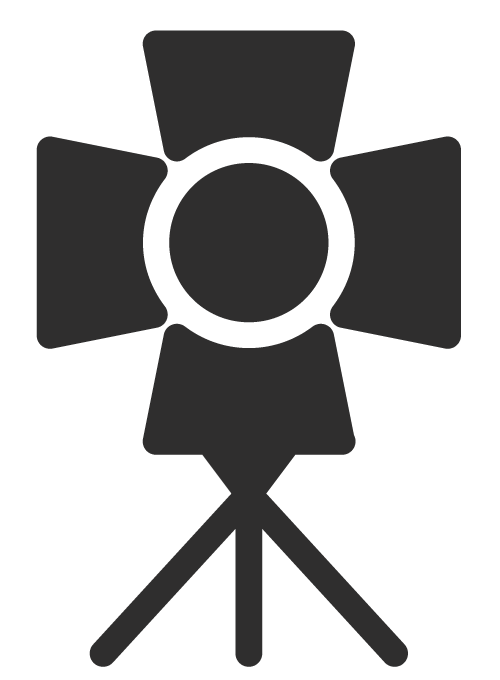
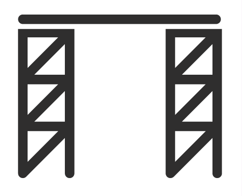

Мы берем на себя разработку художественной и светотехнической концепций мероприятия, технический менеджмент по подготовке и реализации концепции, разработку видеоконтента и стилистики мероприятия.
Разработка и заключение договоров со всеми подрядными организациями.
Формирование технических заданий по всему объему проекта
Оценка технических объемов проекта, соответствующих разработанной концепции.
Взаимодействие с творческой группой (Художник-декоратор, Художник по свету, Саунд-дизайнер, ТВ группа, Режиссер-постановщик и т.д.) для формирования целостной картины технического наполнения проекта, а также для выявления и проработки
всех возможных мест пересечения оборудования.
2
Проведение технических совещаний.
3
Формирование комплекта инженерно-технической документации: планировки, схемы, расчет весовых нагрузок и электропотребления, сводный график монтажа и т.д.
4
Оценка технических объемов проекта, соответствующих разработанной концепции.
5
Работа с техническими райдерами Артистов. Cогласование оборудования и возможных изменений/замен с менеджментом Артистов.
6
Формирование технических заданий по всему объему проекта

светзвуквидео
сценическое оборудованиеспецэффектыдекорации
7
Разработка и заключение договоров со всеми подрядными организациями. Для Заказчика это проведение сделки по всему бюджету с одним контр-агентом.
8
Работа с бюджетом: многосторонняя согласовательная работа с подрядчиками, творческой группой и Заказчиком по изменению ТЗ для достижения желаемых финансовых показателей.
9
Формирование сводной технической сметы проекта, учитывающей все необходимые затраты для реализации проекта в формате разработанной концепции (учитывая особенности проекта и площадки) и на основании составленных технических заданий.
10
Взаимодействие с площадкой: формирование комплекта технической и административной документации для площадки (схемы, графики, ТЗ и т.д.), согласовательная работа с площадкой.
11
Работа с техническими райдерами Артистов. Cогласование оборудования и возможных изменений/замен с менеджментом Артистов.
12
Организация проведения монтажно-демонтажных работ. В случае необходимости предоставление/привлечение дополнительного персонала на мероприятие (Выпускающий режиссер, Стейж-менеджер, Постановщики, Стейж-хендс и т.д.)